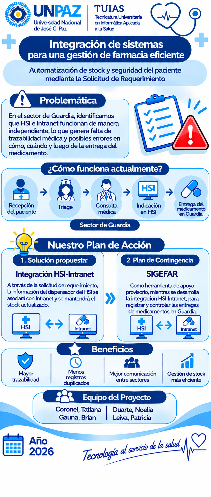

Descripción del proyecto
Proyecto académico desarrollado en el marco de la Tecnicatura Universitaria en Informática Aplicada a la Salud de la Universidad Nacional de José C. Paz (UNPAZ), centrado en la elaboración de una Solicitud de Requerimiento técnico-funcional para la interoperabilidad entre los sistemas HSI e Intranet.
La propuesta se orienta a acompañar la implementación de una Farmacia de Guardia en el Hospital Interzonal General de Agudos "Vicente López y Planes" (General Rodríguez) para cubrir la dispensación y reposición de medicamentos, con especial atención en el turno vespertino.
En lugar de reemplazar las plataformas actuales o realizar una transformación tecnológica costosa desde cero, el planteo busca articular progresivamente los sistemas existentes, aprovechar la infraestructura y los recursos institucionales disponibles, y sumar trazabilidad, registro nominalizado y consulta de movimientos.
Problemática analizada
A partir del diagnóstico institucional, observaciones en Guardia y Farmacia, pruebas en entorno HSI y entrevistas realizadas durante las prácticas, se identificó la falta de comunicación automática entre la Historia de Salud Integrada (HSI), empleada para el registro de atención y prescripción médica, y la Intranet, utilizada por Farmacia para administrar el stock y las entregas.
- Prescripciones registradas en HSI que requerían transcripción a papel o permanecían en estado "activa" incluso después de entregarse el medicamento.
- Duplicación de registros, controles manuales adicionales y dificultades para mantener la trazabilidad y el egreso nominalizado vinculado al paciente y la atención.
- Limitaciones para consultar consumos reales y gestionar la reposición de stock en Guardia con datos integrados y oportunos.
Objetivo y alcance técnico
El objetivo principal fue mejorar el circuito de dispensación y reposición de medicamentos en Guardia mediante la articulación progresiva entre HSI e Intranet, favoreciendo el registro nominalizado, la trazabilidad y la disponibilidad oportuna de información con los recursos existentes.
- Datos mínimos y trazabilidad: definición de campos clave (paciente/usuario, profesional prescriptor, medicamento, presentación/código, cantidad dispensada, fecha y hora, servicio, stock disponible y estado de reposición), manteniendo separado el stock de Guardia del de Farmacia Central.
- Roles, historias de usuario y requerimientos: especificación de actores directos e indirectos (admisión, enfermería, médicos, farmacéuticos, técnicos de farmacia, farmacia central, sistemas, SADOFE y dirección), historias de usuario, requerimientos funcionales (RF1–RF7) y no funcionales (RNF1–RNF4), y casos de uso.
- Riesgos, contingencia e implementación: matriz de riesgos, alternativas provisorias ante contingencias y cronograma de implementación en 8 fases (16 semanas) con prueba piloto e indicadores de evaluación.
Trabajo en equipo
El proyecto fue realizado de manera grupal junto a Tatiana Coronel, Noelia Duarte y Patricia Leiva, articulando el relevamiento del circuito asistencial y farmacéutico, las entrevistas a referentes del hospital y la redacción integral de la solicitud de requerimiento.
El trabajo conjunto permitió contrastar el circuito actual con el circuito propuesto, evaluar escenarios de riesgo operativos y de seguridad, y proyectar una implementación progresiva acorde a la realidad institucional.
Mi participación
Participé en el análisis del circuito de dispensación y reposición en Guardia, la identificación de brechas de interoperabilidad entre HSI e Intranet y la definición de los requerimientos, flujos de trabajo y criterios de trazabilidad y nominalización.
Asimismo, colaboré en la estructuración de la documentación técnica, el modelado de procesos y la planificación de las fases de implementación, prueba piloto y seguimiento mediante indicadores.
Documentación y recursos del proyecto
Accedé al informe completo en PDF, al folleto informativo, al póster visual y a la presentación audiovisual del proyecto.
Informe técnico (PDF)
Solicitud de Requerimiento completa con diagnóstico, requerimientos RF/RNF, casos de uso, riesgos y plan de 16 semanas.
Folleto informativo (PDF)
Material de síntesis diseñado para comunicar de forma clara el propósito, el circuito propuesto y los beneficios esperados.
Banner / Póster del proyecto
Síntesis gráfica del proyecto con el diagnóstico en Guardia, la integración progresiva entre HSI e Intranet y el impacto en trazabilidad y control de stock.

Video del proyecto
Presentación audiovisual que recorre el funcionamiento esperado del circuito y resume el valor de la propuesta.